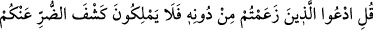

RABBİNİN AZÂBI HAKTIR
56. (Rasûlüm!) De ki: “Allah’ı bırakıp da (ilâh olduğunu) ileri sürdüklerinize
yalvarın. Ne var ki onlar, sizin sıkıntınızı ne uzaklaştırabilir, ne de değiştirebilirler.”
57. Onların yalvardıkları bu varlıklar Rablerine -hangisi daha yakın olacak diye-
vesile ararlar; O’nun rahmetini umarlar ve azâbından korkarlar. Çünkü Rabbinin
azâbı, sakınılacak bir azaptır.
58. Hiçbir ülke yoktur ki biz, kıyâmet gününden önce onu helâk edecek, yahut
ona şiddetli bir şekilde azâb edecek olmayalım. Bu, Kitap’ta (levh-i mahfuz’da)
yazılıdır.
Rasûlüm! “De ki:” Ey Mekke müşrikleri! “Allah’ı bırakıp da” ilâh olduğunu “ileri
sürdüklerinize” meleklere, Mesih’e, annesine ve Uzeyr’e “yalvarın. Ne var ki onlar,
sizin sıkıntınızı” hastalık, fakirlik ve kıtlık gibi sıkıntıları “ne uzaklaştırabilir, ne de
değiştirebilirler” Onu sizin dışınızdaki kabilelere yöneltmeye ve nakletmeye de güç
yetiremezler.
57. Onların yalvardıkları bu varlıklar Rablerine -hangisi daha yakın olacak diye-
vesile ararlar; O’nun rahmetini umarlar ve azâbından korkarlar. Çünkü Rabbinin
azâbı, sakınılacak bir azaptır.
“Onların yalvardıkları bu varlıklar” müşriklerin ilah diyerek yalvardıkları şeyler
kendileri için “Rablerine” işlerinin mâlikine ve mutlak hâkimine “-hangisi daha yakın
olacak diye- vesîle ararlar” yâni tâat ve ibâdet ile Allah’a kurbetin/yakınlığın yolunu
ararlar. Kâşifî şöyle der: “Bir vesîle ve bir el tutar, yâni tâat ve ibâdet ile Hz. Hakk’a